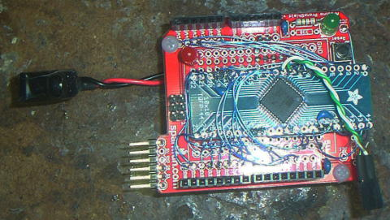

Arduino Clone using ATXMega64D4
Sparkfun shield board with TQFP breakout board

Default pin mapping for 'xmega64d4' variant
Runs at 3.3V vs 5V (not 5V tolerant)
TWI (2-wire) pins brought out separately (no 'R3' pins)
Prev
Next
© 2014 by Bob Frazier and S.F.T. Inc. - all rights reserved